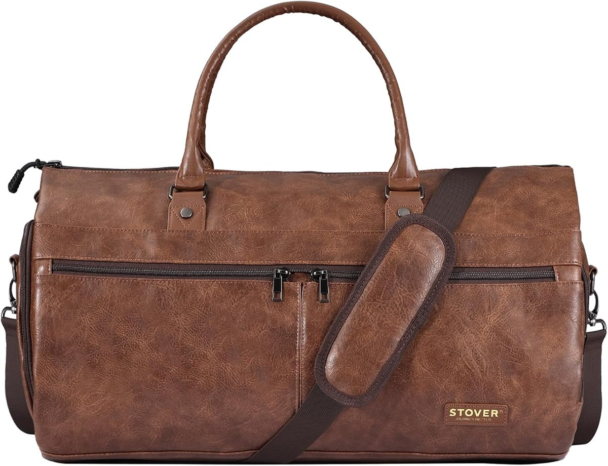

Photo 1 of 7 · Front view with shoulder strap. Product images supplied by the listing.
Brown leather-look · Convertible garment duffel with shoe compartment
Stover Convertible Garment Duffel Bag
Carry a suit or dress hanging flat, plus folded clothes and shoes, in one bag that closes up as a duffel.
Features above come from the Amazon listing and product photos. Dimensions are the brand’s figures, not our measurements.
The brand’s image shows approximately 22 × 12 × 13 in (56 × 30 × 33 cm) when packed. That is larger than many airlines’ free under-seat allowances. Compare your allowance →
As an Amazon Associate, we earn from qualifying purchases, at no extra cost to you.
View the latest price and availability on Amazon UK. Confirm the seller, delivery estimate and return terms before ordering.
What you are buying
The Stover Convertible Garment Duffel Bag in Leatherette Brown, sold on Amazon UK. The listing also offers Leatherette Grey and Onyx Black. Confirm the colour and seller on the listing.
How we researched it
Based on the retailer listing, product images and the brand’s product information. Based on published specifications; not a hands-on test.
Where you check out
You purchase on Amazon UK. When we checked on 4 October 2026 the listing showed Amazon US as the seller, so import terms may apply. Confirm the current seller, shipping origin, delivery estimate and returns policy.
Compare your bag allowance.
Enter your airline’s three maximum dimensions in centimetres for the bag allowance included with your fare. This is a size comparison, not airline approval.
Check total packed size including handles and bulging pockets, and the airline’s weight limit. A soft bag’s packed dimensions may differ from the diagram.
Why shortlist it, and what to weigh up.
Why shortlist it
- A lay-flat garment section holds hanging clothes. The photos show hanger loops, hook-and-loop tabs and a fold-down panel for folded items.
- Six interior pockets (three zipped), plus front zip pockets and a separate side shoe compartment.
- Two top handles, plus a padded shoulder strap the brand describes as detachable.
- A luggage sleeve on the back slides over a suitcase handle.
- The brand’s images describe a polyester outer with a scratch- and stain-resistant finish for easy cleaning.
Know the trade-offs
- At about 22 × 12 × 13 in (56 × 30 × 33 cm) packed, it is larger than many airlines’ free under-seat allowances. Check yours.
- Check the zips, seams and strap attachments on arrival, before you need the bag for a trip.
- It is a carried bag with no wheels, and a full duffel this size can get heavy over long distances.
- The finish is leather-look. The brand’s images describe a polyester outer, so confirm the material on the listing if genuine leather matters to you.
- Confirm the current shipping origin and returns arrangements; an imported offer may differ from a local one.
Who should probably look elsewhere
- Anyone with a strict under-seat allowance.
- Travellers covering long distances on foot with a heavy load, where wheels may help.
- Anyone carrying very long coats or dresses, unless the roughly 40 in (102 cm) opened length shown in the brand’s diagram is long enough.
- Anyone who needs a guarantee of crease-free arrival.
Compare the current offer, seller and delivery terms on Amazon UK before deciding.
Check current price on AmazonWhere this style of bag fits in.
A business trip
Hang a suit jacket and shirt in the garment section, put shoes in the side compartment and keep ties, pens and a phone in the interior pockets.
A weekend away
Folded clothes in the main compartment, shoes in the separate shoe compartment and small items in the zipped pockets.
Travelling with a suitcase
The luggage sleeve is designed to slide over a suitcase handle, so the bag can ride on top of a wheeled case.
What we know, and what is still to confirm.
- Product
- Stover Convertible Garment Duffel Bag, brown leather-look
- Type
- 2-in-1 garment bag and duffel bag with shoe compartment
- Packed dimensions
- About 22 × 12 × 13 in (56 × 30 × 33 cm), from the brand’s listing image
- Opened garment section
- About 40 × 22 in (102 × 56 cm) laid flat, with a 19 in (48 cm) inner panel width, from the brand’s diagram
- Empty weight
- Not confirmed. Check the Amazon listing.
- Capacity
- Not confirmed. The brand describes an extra-large interior; we have not confirmed a litre capacity.
- Material
- Polyester outer with a leatherette finish, according to the brand’s images; Amazon lists the colour as Leatherette - Brown. Confirm the exact material and care label on the listing.
- Colours
- Leatherette Brown (shown here). The listing also offers Leatherette Grey and Onyx Black.
- Carry options
- Two top handles, a padded detachable shoulder strap, and a luggage sleeve for a suitcase handle
- Pockets
- Six interior pockets (three zipped), front zip pockets, a side shoe compartment and a side end pocket
Dimensions: supplied product images, not independent measurements. Features cross-checked against the photos on the Amazon UK listing. Checked 4 October 2026. Current Amazon UK stock, seller, ratings and offer were not reverified.
Included in the box
The bag and its detachable shoulder strap, as shown in the photos. Confirm the exact contents on the listing before ordering.
The clothes, shoes and accessories shown in the photos are not included.
Stover next to other options.
Swipe the table sideways to see more →
| Model | Key features | Size | Capacity and weight | Best for |
|---|---|---|---|---|
| Stover Convertible Garment Duffel Bag | Lay-flat hanging garment section, shoe compartment, six interior pockets, luggage sleeve | About 56 × 30 × 33 cm (brand image) | Not confirmed | Trips where a suit or dress should hang flat |
| Luhxe Travel Bag 2.0 | Wrinkle-free garment section, shoe compartment, padded detachable shoulder strap, snap-on detachable wheels with a telescopic handle, toiletry and shoe bag | About 51 × 23 × 32 cm (brand page, 20 × 9 × 12.5 in) | Litres not stated. 1.1 kg (brand page) | Travellers who want the option of wheels on a slimmer bag |
| Seyfocnia Convertible Garment Duffle (leather-look) | Hanging garment section with two interior buckles, separate shoe pouch, detachable adjustable shoulder strap, side zip pocket, waterproof PU leather | About 56 × 28 × 30 cm (listing, 22 × 11 × 12 in) | 44 L. 1.7 kg (listing, 3.8 lb) | Weekend trips where a hanging outfit and a separate shoe pouch matter |
| Modoker Convertible Garment Duffel | Hanging garment section, shoe pouch on one side and a small-items pocket on the other, detachable adjustable strap, luggage sleeve, toiletry bag, water-resistant polyester | About 58 × 28 × 30 cm (listing, 22.8 × 11 × 11.8 in) | 45 L. 1.1 kg (listing, 2.5 lb) | Suit or dress on a weekend trip, riding on a suitcase handle |
| TONRUYN Rolling Garment Duffle, 55L | Hanging section with ties, separate shoe compartment, wheels and telescopic handle, 900D polyester described as waterproof | 57 × 32 × 30.5 cm (listing) | 55 L. 3.1 kg (listing) | Travellers who would rather roll the bag than carry it |
| Briggs & Riley Baseline Garment Duffle, 45L | Suiter compartment for 1 to 2 suits, moisture-resistant shoe pocket, security-checkpoint pocket, lifetime guarantee | 55.9 × 31.8 × 22.9 cm (retailer listing) | 45.7 L, 2.0 kg | Frequent travellers who want a long guarantee and are happy to pay more |
Before you pack it.
Will it fit as cabin baggage?
At about 56 × 30 × 33 cm packed it is larger than many airlines’ free under-seat allowances. It may fit a larger cabin-bag allowance if your fare includes one, so use the checker above and read your airline’s rules, including weight.
Is it real leather?
The finish is leather-look. The brand’s images describe a robust polyester outer that is easy to clean. If the material matters to you, confirm it on the Amazon listing.
Does the shoulder strap come off?
The brand’s images describe the shoulder strap as detachable and show it padded. The bag also has two top handles.
What warranty and returns should I check?
We have not confirmed a warranty period. Check the seller, shipping origin and returns policy on the Amazon UK listing before ordering, because import offers can differ from local ones.
Why is there no price?
Amazon prices and availability change often, so we do not copy them here. Use the button to see the current offer.
Have you tested this yourselves?
No. This page is based on the retailer listing, product images and the brand’s published information, not a hands-on test.
Will my clothes arrive crease-free?
The brand markets the garment section as a way to keep clothes wrinkle-free, but creasing depends on the fabric, how full the bag is and how you pack. We cannot promise crease-free arrival.
Is there a women’s version?
Stover also sells a cream colourway with a matching toiletry bag. See our Stover women’s garment duffel page.
One bag for the next trip?
Compare the current offer, seller and delivery terms on Amazon UK before deciding.
Check current price on AmazonAs an Amazon Associate, we earn from qualifying purchases, at no extra cost to you.